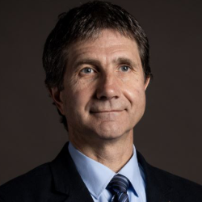

Demény Attila
az MTA rendes tagja
Igazgató

Elérhetőségek
- +36 1 319 3137
- +36 1 319 3137
- demeny at geochem.hu
- 305-306. szoba

Születési hely és idő
- Budapest, 1962.
Képesítés és fokozat
- Okleveles geológus (ELTE TTK, 1986)
- Dr. univ. (geokémia): Eötvös Loránd Tudományegyetem, Budapest, 1992. A disszertáció címe: "Ásványtani, geokémiai és stabilizotóp-vizsgálatok a hazai Penninikum kőzeteiben: A Kőszeg-rohonci-sorozat és a Tauern-ablak összevetése"
- Földtudomány kandidátusa (C.Sc.): Tudományos Minősítő Bizottság, Budapest, 1994. A disszertáció címe: "Magmatizmushoz kapcsolódó karbonátképződés és -átalakulás stabilizotópos vizsgálata"
- MTA doktora (D.Sc.): Az MTA Doktori Tanácsa, Budapest, 2001. A disszertáció címe: "Köpenyeredetű kőzetekhez kapcsolódó fluidumok származásának és fejlődésének stabilizotópos vizsgálata"
- MTA levelező tagja, 2010.
- MTA rendes tagja, 2016.
Nyelvtudás
- angol, felsőfok
Fontosabb kutatási területek
- Metamorf kőzetek kialakulási körülményeinek stabilizotópos vizsgálata (pl. A Kőszegi-hegység Penninikuma, soproni leukofillitek).
- Köpenyeredetű magmás kőzetek fluidumtartalmának C, O, H, and N stabilizotópgeokémiája, különös tekintettel a karbonatitos magmatizmushoz kapcsolódó fluidummozgások vizsgálatára (hazai magmás kőzetek, India, a Kanári-szigetek, a Kola-félsziget és Kanada karbonatitjai).
- Kihalási események (perm-triász és triász-júra) izotópgeokémiai vizsgálata.
- Az izotópgeokémia paleoklimatológiai alkalmazásai; a Geokémia és Paleoklíma Kutatócsoport munkájának koordinálásása.
Kiemelt kutatási eredmények
- új publikációk a Scientific Reports , a Quaternary Science Reviews és a Science Advances folyóiratokban.
Fontosabb tanulmányutak
- Ausztria, 1987, 1 hónap a Soros Alapítvány támogatásával
- Hollandia, Utrecht, 1988-1989-ben 5 hónap a Magyar Ösztöndíjtanács támogatása révén
- Olaszország, Trieszt, 1993-ban 2 hónap, az MTA és a CNR támogatásával
- Svájc, Lausanne, 1995-ben 4 hónap a Fonds National Suisse de la Recherche Scientifique támogatásával
- Németország, Tübingen. 1996-ban 2 hónap a DAAD támogatásával
- Olaszország, Róma. 2001-ben 1 hónapos meghívás "visiting professor"-ként a Római Egyetemre
- Svájc, Lausanne. 2005-ben 3 hónapos meghívás a Lausanne-i Egyetemre
Szakmai közéleti tevékenység
- 1994-96. Az International Isotope Society elnöke.
- 1996- Az MTA Ásvány-Kőzettani és Geokémiai Tudományos Bizottság tagja, 2002-től titkára, 2008-tól elnöke
- 2000-2003. A Magyarhoni Földtani Társulat Választási Bizottság elnöke
- 2000-2003. A Magyarhoni Földtani Társulat választmányának titkára
- 2000-2008. Az International Association of Geochemistry and Cosmochemistry tanácsadó testületének tagja, 2002 és 2008 között titkára
- 2004- Az Acta Geologica Hungarica szerkesztőbizottsági tagja
- 2004-2008. Az OTKA Földtudomány 1 zsűri tagja, 2005-2008 között elnöke
- 2006- Az IUGS Magyar Nemzeti Bizottság titkára
- 2008- Az ELTE Habilitációs Bizottság tagja
- 2009- Earth System Science Data, szerkesztőbizottsági tag
- 2010- A Central European Geology főszerkesztője
- 2015- Az NKFIH-OTKA Agrár-Környezet-Ökológia és Földtudományi Kollégium elnöke
Konferenciaszervezés
- 1996. Isotope Workshop III
- 1997, 2000, 2002. Izotópgeokémiai Ankétok
- 1997. "A föld- és környezettudományok szerepe történeti örökségünk megőrzésében"
- 2007. PAGES (Past Global Changes) 2007 konferencia
- International Geological Congress, szekciószervezés (2008)
- European Geosciences Union, szekciószervezés (2006, 2009, 2010, 2011, 2012)
- JESIUM 2012, szekcióvezetés
Elnyert díjak
- A Szádeczky-Kardoss Elemér Alapítvány 1. és 2. díjai
- Az MTA Ifjúsági Díja (1993)
- Az OMSZ Szakirodalmi Nívódíja (2003)
- Akadémiai Díj (2007)
- 2009. Certificate of Recognition. International Association of GeoChemistry.
Oktatási tevékenység
- Több, mint 15 év részvétel az ELTE geológus képzésében: a geokémia kollokvium részeként a stabilizotóp-geokémiát bemutató előadás, majd „Stabilizotóp-geokémia” speciális kollégium. Emellett jelenleg az ELTE doktori iskoláján belül „Stabilizotóp-geokémia” kurzus. 5 szakdolgozat és 3 PhD munka külső konzulense.
Publikációk

Az utolsó 5 év fontosabb publikációi
- Demény, A., Kern, Z., Németh, A., Frisia, S., Hatvani, I.G., Czuppon, Gy., Leél-Ossy, Sz., Molnár, M., Óvári, M., Surányi, G., Gilli, A., Wu, Ch.-Ch., Shen., Ch.-Ch. (2019) North Atlantic influences on climate conditions in East-Central Europe in the late Holocene reflected by flowstone compositions. Quaternary International 512, 99112.
- Németh, P., Mugnaioli, E., Gemmi, M., Czuppon, Gy., Demény, A., Spötl, C. (2018) A nanocrystalline monoclinic CaCO3 precursor of metastable aragonite. Science Advances 4, 12, eaau6178.
- Hatvani IG, Kern Z, Leel-Ossy S, Demeny A (2018) Speleothem stable isotope records for east-central Europe: resampling sedimentary proxy records to obtain evenly spaced time series with spectral guidance. Earth System Science Data 10, 139-149.
- Újvári G, Stevens T, Molnár M, Demény A, Fabrice L, Varga G, Jull AJT, Páll-Gergely B, Buylaert JP, Kovács J (2017) Coupled European and Greenland last glacial dust activity driven by North Atlantic climate. Proceedings of the National Academy of Sciences of the United States of America 114, 10632-10638.
- Demény A, Kern Z, Czuppon Gy, Németh A, Leél-Össy Sz, Siklósy Z, Lin K, Hsun-Ming H, Shen Ch-Ch, Vennemann T W, Haszpra L (2017) Stable isotope compositions of speleothems from the last interglacial e Spatial patterns of climate fluctuations in Europe. Quaternary Science Reviews 161: pp. 68-80.
- Demény, A., Németh, P., Czuppon, Gy., Leél-Össy, Sz., Szabó, M., Judik, K., Németh, T., Stieber, J. (2016) Formation of amorphous calcium carbonate in caves and its implications for speleothem research. Scientific Reports, 6:39602, DOI: 10.1038/srep39602
- Kovács, I., Demény, A., Czuppon, G., Lécuyer, C., Fourel, F., Xia, Q.-K., Liu, J., Pintér, Zs., Király, E., Török, K., Szabó, Á., Deloule, E., Falus, Gy., Fancsik, T., Zajacz, Z., Sándorné Kovács, J., Udvardi, B. (2016) Water concentrations and hydrogen isotope compositions of alkaline basal-hosted clinopyroxene megacrysts and amphibole clinopyroxenites: the role of structural hydroxyl groups and molecular water. Contribution to Mineralogy and Petrology, 171, 38. DOI: 10.1007/s00410-016-1241-0
- Demény, A., Czuppon, Gy., Kern, Z., Leél-Össy, Sz., Németh, A., Szabó, M., Tóth, M., Wu, Ch-Ch., Shen,Ch.-Ch., Molnár, M., Németh, T., Németh, P., Óvári, M. (2016): Recrystallization-induced oxygen isotope changes in inclusion-hosted water of speleothems Paleoclimatological implications. Quaternary International, 415, 25-32.
- Demény A (2015) Lézerspektroszkópia: új technika a hidrológiai és paleoklíma-kutatás területén. Magyar Tudomány 176, 462-469.
- Downes PJ, Demény A, Czuppon Gy, Lynton Jaques A, Verrall M, Sweetapple M, Adams D, McNaughton NJ, Gwalani LG, Griffin BJ (2014) Stable HCO isotope and trace element geochemistry of the Cummins Range Carbonatite Complex, Kimberley region, Western Australia: implications for hydrothermal REE mineralization, carbonatite evolution and mantle source regions. Mineralium Deposita 49, 905-932.
- Czuppon Gy, Ramsay RR, Özgenc I, Demény A, Gwalani LG, Rogers K, Eves A, Papp L, Palcsu L, Berkesi M, Downes PJ (2014) Stable (H, O, C) and noble-gas (He and Ar) isotopic compositions from calcite and fluorite in the Speewah Dome, Kimberley Region, Western Australia: implications for the conditions of crystallization and evidence for the influence of crustal-mantle fluid mixing. Mineralogy and Petrology 108, 759-775.
Utolsó frissítés 2021.04.29.